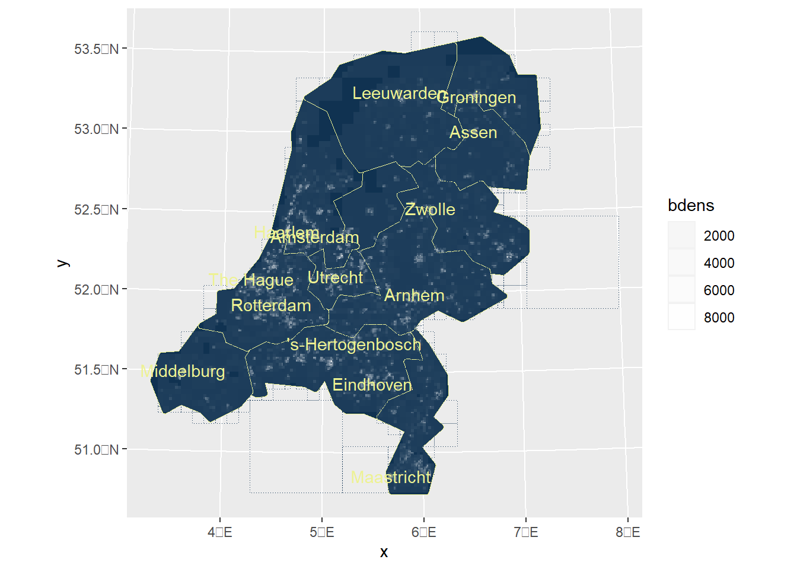
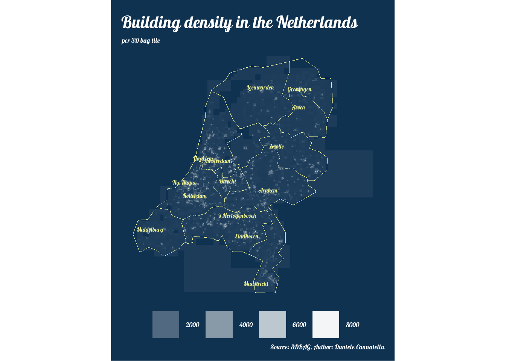

This template is designed to guide you through the challenge, providing structured steps and helpful resources for each mapping task. Whether you’re a seasoned cartographer or just starting your journey, we hope you find inspiration and joy in visualizing data and sharing your work with the community. Let’s embark on this mapping adventure together!
This template uses a polygon map as an example to illustrate the process of creating visually engaging and informative maps with R. It is designed to guide you through the challenge, providing structured steps and helpful resources for each mapping task.
A polygon Map
1. Package Installation and Loading
Attaching package: 'dplyr'
The following objects are masked from 'package:stats':
filter, lag
The following objects are masked from 'package:base':
intersect, setdiff, setequal, union
Linking to GEOS 3.9.3, GDAL 3.5.2, PROJ 8.2.1; sf_use_s2() is TRUE
Loading required package: sysfonts
Loading required package: showtextdb
here() starts at C:/Users/dcannatella/surfdrive/01_Research/2024-30daysmapchallenge/30DayMapChallenge2024
Reading layer `3DBAG_tiles' from data source
`C:\Users\dcannatella\surfdrive\01_Research\2024-30daysmapchallenge\30DayMapChallenge2024\template\data\3DBAG_tiles.shp'
using driver `ESRI Shapefile'
Simple feature collection with 15086 features and 2 fields
Geometry type: POLYGON
Dimension: XY
Bounding box: xmin: 13593.34 ymin: 306890.4 xmax: 333593.3 ymax: 626890.4
Projected CRS: Amersfoort / RD New
3. Calculate building density per tile
# Remove duplicate geometries from tilestiles <- tiles %>%st_as_sf() %>%# Ensure it's an sf objectdistinct() # Remove duplicate rows based on geometry and attributestiles$area <-as.numeric(st_area(tiles))tiles$bdens <- tiles$obj_nr_bui / (tiles$area/1000000)# Calculate density (n. buildings/km2)tiles
Reading layer `ne_10m_populated_places_simple' from data source
`C:\Users\dcannatella\surfdrive\01_Research\2024-30daysmapchallenge\30DayMapChallenge2024\template\data\ne_10m_populated_places_simple.shp'
using driver `ESRI Shapefile'
Simple feature collection with 7342 features and 31 fields
Geometry type: POINT
Dimension: XY
Bounding box: xmin: -179.59 ymin: -90 xmax: 179.3833 ymax: 82.48332
Geodetic CRS: WGS 84
# Transform the CRS of cities_labels to match tiles extentcities_labels <-st_transform(cities_labels, crs =st_crs(tiles))# Perform the intersectioncities_labels <-st_intersection(tiles, cities_labels)
Warning: attribute variables are assumed to be spatially constant throughout
all geometries
cities_labels <- cities_labels %>%filter(iso_a2 =="NL") # Check the result plot(st_geometry(cities_labels))
Reading layer `provincies' from data source
`C:\Users\dcannatella\surfdrive\01_Research\2024-30daysmapchallenge\30DayMapChallenge2024\template\data\provincies.shp'
using driver `ESRI Shapefile'
Simple feature collection with 12 features and 6 fields
Geometry type: MULTIPOLYGON
Dimension: XY
Bounding box: xmin: 10425.16 ymin: 306846.2 xmax: 278026.1 ymax: 621876.3
Projected CRS: Amersfoort / RD New
6. Simplify provinces
# Step 1: Simplify the polygons (reduce number of vertices)provincies_simple <-ms_simplify(provincies, keep =0.01) # Keep 1% of original vertices# Step 2: Extract the simplified polygon coordinates# Use st_geometry() to extract only the geometries, and then apply st_coordinatessimple_coords <-st_coordinates(st_geometry(provincies_simple))# Step 3: Snap the coordinates to 8 cardinal directions# Define the cardinal directions (N, S, E, W, NE, NW, SE, SW)directions <-c(0, 45, 90, 135, 180, 225, 270, 315) # Angles in degrees# Define the snapping functionsnap_to_direction <-function(x, y, directions) {# Calculate angle from origin (x, y) and snap to the nearest direction angle <-atan2(y, x) *180/ pi angle <- (angle +360) %%360# Normalize angle to [0, 360] closest_direction <- directions[which.min(abs(directions - angle))]# Calculate the new snapped coordinates rad <- closest_direction * pi /180 new_x <-cos(rad) *sqrt(x^2+ y^2) new_y <-sin(rad) *sqrt(x^2+ y^2)return(c(new_x, new_y))}# Apply the snapping function to each vertex (loop over the coordinates)snapped_coords <-apply(simple_coords, 1, function(coord) snap_to_direction(coord[1], coord[2], directions))# Reshape snapped_coords into the correct format for polygons (a matrix of x, y)snapped_matrix <-matrix(snapped_coords, ncol =2, byrow =TRUE)# Step 4: Close the polygon by ensuring the first and last vert
provincies_simple2 <-st_simplify(provincies_simple, dTolerance =2000) # More simplification
# even more simplification!# Load or create your spatial data# For example, using a sample of tiles# tiles <- st_read("path_to_your_shapefile")# Step 1: Simplify the polygons (reduce number of vertices)provincies_simple3 <-ms_simplify(provincies_simple2, keep =0.5) # Keep 1% of original vertices# Step 2: Extract the simplified polygon coordinates# Use st_geometry() to extract only the geometries, and then apply st_coordinatessimple_coords <-st_coordinates(st_geometry(provincies_simple3))# Step 3: Snap the coordinates to 8 cardinal directions# Define the cardinal directions (N, S, E, W, NE, NW, SE, SW)directions <-c(0, 45, 90, 135, 180, 225, 270, 315) # Angles in degrees# Define the snapping functionsnap_to_direction <-function(x, y, directions) {# Calculate angle from origin (x, y) and snap to the nearest direction angle <-atan2(y, x) *180/ pi angle <- (angle +360) %%360# Normalize angle to [0, 360] closest_direction <- directions[which.min(abs(directions - angle))]# Calculate the new snapped coordinates rad <- closest_direction * pi /180 new_x <-cos(rad) *sqrt(x^2+ y^2) new_y <-sin(rad) *sqrt(x^2+ y^2)return(c(new_x, new_y))}# Apply the snapping function to each vertex (loop over the coordinates)snapped_coords <-apply(simple_coords, 1, function(coord) snap_to_direction(coord[1], coord[2], directions))# Reshape snapped_coords into the correct format for polygons (a matrix of x, y)snapped_matrix <-matrix(snapped_coords, ncol =2, byrow =TRUE)# Step 4: Close the polygon by ensuring the first and last vert
# Apply a small buffer to close gaps or remove overlapsbuffered_polygons <-st_buffer(provincies_simple4, dist =2000) # Small positive bufferunbuffered_polygons <-st_buffer(buffered_polygons, dist =-2000) # Remove the buffer
provincies_simple5 <- buffered_polygons
Plot the Polygon map
1. Set the ggplot
tiles_p <-ggplot()+geom_sf(data=provincies_simple5, fill="#103251", color="#EDF292")+geom_sf(data=tiles, fill="NA", color="#103251", size =0.1, linetype ="dotted", alpha=0.1)+geom_sf(data=tiles, aes(alpha=bdens), fill="white", color=NA)+scale_alpha_continuous(range =c(0.05,1)) +geom_sf(data = cities_labels, color ="#EDF292", size =1, alpha =0.25)+geom_sf_text(data = cities_labels, aes(label = name), color ="#EDF292",family="script",alpha=1,nudge_x =0.1, # Adjust this value to move the labels horizontallynudge_y =0.1# Adjust this value to move the labels vertically )# Add city labels with nudging to avoid overlap with the polygons#geom_sf_label(data = cities_labels, # aes(label = name), color = "#EDF292",# nudge_x = 0.2, # Adjust horizontally# nudge_y = 0.2, # Adjust vertically# label.size = 0.1, # family = "script")tiles_p
Warning in grid.Call.graphics(C_text, as.graphicsAnnot(x$label), x$x, x$y, :
font family not found in Windows font database

2. Style and export the map
2.1 Add custom fonts
# Add Google Fonts to the systemshowtext_auto() # Automatically use showtext for text renderingfont_add_google("Roboto", "roboto") # Add the "Roboto" font from Google Fontsfont_add_google("Lobster", "script") # Add the "Roboto" f
2.2 Plot your map
tiles_p <- tiles_p +theme_void()+theme(plot.background =element_rect(fill ="#103251", color =NA), # Set bg colorplot.margin =margin(10, 10, 10, 10), # Adjust marginslegend.position ="bottom", # Move the legend to the bottomlegend.box ="horizontal", # Arrange legends horizontally in bottomlegend.title =element_blank(), # Remove the title for the fill legendlegend.text =element_text(size =13,family ="script",color ="white"), # Adjust text size and fonplot.title =element_text(size =34,face ="bold",family ="script",color ="white"), # Title font customizationplot.subtitle =element_text(size =13,family ="script",color ="white"), # Adjust text size and font legendplot.caption =element_text(size =13,family ="script",color ="white"),legend.key.height =unit(1, "cm"), # Adjust height to make keys squaredlegend.key.width =unit(1, "cm"), # Adjust width to match height )+# Add a title to the mapggtitle("How many buildings are in the Netherlands?") +# Add your map title here# Control legend appearancelabs(title ="Building density in the Netherlands",subtitle ="per 3D bag tile",caption ="Source: 3DBAG, Author: Daniele Cannatella",fill ="Object Number") +# Add a label for the fill legend# Control legend appearance# Adjust the legend to have two rowsguides(fill =guide_legend(ncol =1, nrow =2, keyheight =unit(0.25, "cm"), keywidth =unit(0.25, "cm")) )tiles_p

# Define the output file nameoutput_file <-"template/output/example_map.png"# Export the map as a PNG with 1:1 aspect ratioggsave(filename = output_file, plot = tiles_p, device ="png", width =6, height =6, units ="in", dpi =300)# Print a message to confirm exportcat("Map has been exported as", output_file, "with a 1:1 aspect ratio.\n")
Map has been exported as template/output/example_map.png with a 1:1 aspect ratio.